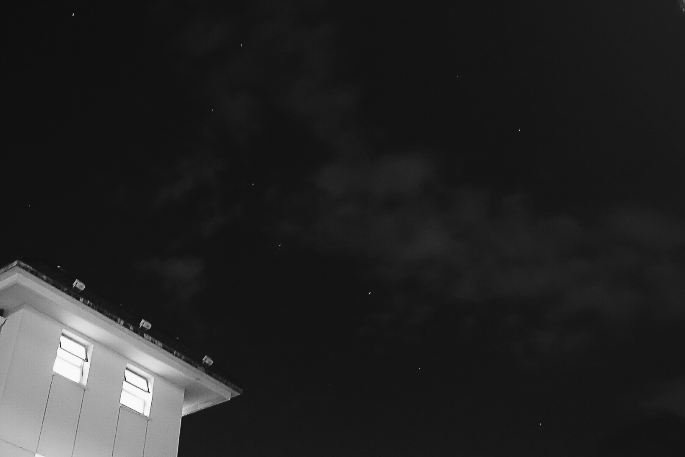

正文:
已！脱！单！
有关我开不开心，孤不孤单这个问题：
每个人对开心的定义不同吧，对于我来讲，天大的事只要有办法能解决那都不算事，只要父母朋友还有我可爱的狗和猫都在身边，那我就没理由不快乐。
我和父母的关系非常好，所以即便遇到不开心小郁闷的事情，我也可以和他们沟通。但事实上，我很少有牢骚抱怨，和爸妈聊天的时候我们总是发搞笑奇怪的表情给对方，分享一些好玩的视频看，所以父母给的温暖永远都在的，我并不孤单。
虽然我是单身，可是我也是有朋友的呀！我有两个玩的非常好又无话不说的小伙伴，每年放假我们都会聚一聚，一起去吃家乡新挖掘出来的一些美食，当然在大学里我也有志趣相合喜欢一起去图书馆的“奖励” 大表姐、也有总是能给我很多好意见的“鹿妈”、和我一样爱狗和猫的“思鱼大哥”、喜欢和我畅谈人生的“振斌大哥”、带我去吃厦门最本土的好吃的“蟹老板”，摄影小能手“vv”
所以你说我不开心吗？我孤单吗？
我习惯一个人只是因为每个人的生活习性都不同，我的确喜欢安静，可是不代表我不开心，我没朋友。
我也会羡慕一些小情侣，可是缘分未到的时候我们为什么要去强求呢？
顺其自然并没有什么错。
没伴侣并不妨碍我继续生活，同样也不影响家人，朋友，宠物所带来的人生乐趣，不是吗^ ^
原答案
——————————————————————————
喜欢收拾东西，墙纸是自己贴的，书柜是自己买回来装的
喜欢做3D拼图，搭积木

喜欢找美食吃
喜欢画些乱七八糟的小玩意儿
喜欢练字
喜欢雨天
喜欢看海
喜欢黑夜
一个人可以吃这么多日料
冰箱里是这样的
一个人可以独享一大块三文鱼
可以为了吃大闸蟹特地买一个蒸锅回来
喜欢做饭

喜欢男香
掌握了一次就能抓到娃娃的技能
没事就去看电影
喜欢猫猫狗狗
心情不好的时候爱听歌
可以在书店逛一个下午
偶尔也会去咖啡店小资
像猫咪一样独立
像小狗一样坚强
相信生命中美好的更多
从感性逐渐进化成理性
虽然单身依然过得精彩
也知道男朋友总会来的（没男票是因为目前没碰到合适的，其实一直很想明年考上研究生的时候结婚生子呢，哈哈哈，但是现在这个理想好像有点不大能实现了！）